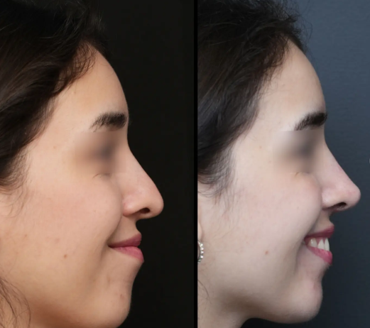
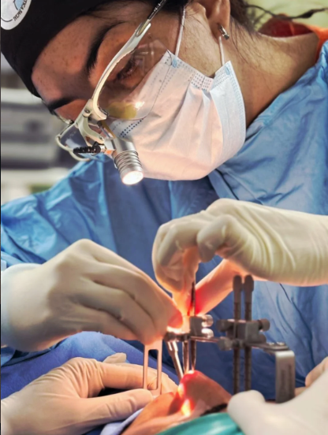
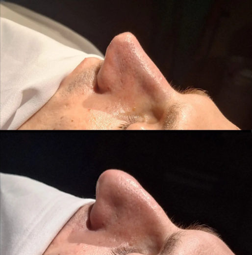

Otorrinolaringóloga • Rinoplastia Estética y Funcional
La Dra. María Julia Carabajal es especialista en Rinoplastia Estética y Funcional. Cada procedimiento comienza con una evaluación integral y una planificación personalizada, pensada para vos.
Cada procedimiento es único. La Dra. Carabajal trabaja con evaluación integral y planificación personalizada para garantizar el mejor resultado posible.

Procedimiento quirúrgico diseñado para armonizar la nariz con los rasgos del rostro. Resultados naturales, proporcionales y duraderos.

Corrección de tabique desviado, dificultad respiratoria y obstrucciones nasales. Salud y estética en un mismo procedimiento.
Primera consulta detallada para analizar tu caso, entender tus objetivos y definir el plan de tratamiento más adecuado para vos.

Cada nariz es única. La planificación es individualizada, teniendo en cuenta tu anatomía, tus expectativas y tu salud general.
La Dra. Carabajal combina formación médica de excelencia con un enfoque profundamente humano. Cada paciente recibe atención personalizada y acompañamiento en todo el proceso.
Casos reales, pacientes reales. Cada resultado es fruto de una planificación cuidadosa y una técnica quirúrgica precisa.
Seguí a la Dra. Carabajal en Instagram para ver casos antes/después y aprender más sobre los procedimientos.
Ver casos en InstagramCompletá el formulario o escribinos directamente por WhatsApp. Te respondemos a la brevedad para coordinar una consulta personalizada.
11 5798-3194
Buenos Aires, Argentina
@dra.mariajuliacarabajal.orl